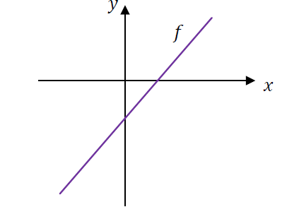

Współczynniki funkcji liniowej z wykresu oraz punkt na prostej
Poziom podstawowyZadania zamknięte wielokrotnego wyboru
1. Dana jest funkcja liniowa $f$ określona wzorem $f(x) = ax + b$, gdzie $a$ i $b$ są liczbami rzeczywistymi. Wykres funkcji $f$ przedstawiono w kartezjańskim układzie współrzędnych $(x, y)$ na rysunku obok.
Współczynniki $a$ i $b$ we wzorze funkcji $f$ spełniają warunki:
A. $a > 0$ i $b > 0$ B. $a > 0$ i $b < 0$ C. $a < 0$ i $b > 0$ D. $a < 0$ i $b < 0$
2. Na płaszczyźnie, w kartezjańskim układzie współrzędnych $(x, y)$, dana jest prosta $k$ o równaniu $y = 3x + b$, przechodząca przez punkt $A = (-1, 3)$. Współczynnik $b$ w równaniu tej prostej jest równy:
A. $0$ B. $6$ C. $(-10)$ D. $8$

Rysunek do zadania 1 – 2
Wskazówka & Kluczowa Teoria:
Funkcja rosnąca ma współczynnik kierunkowy $a > 0$. Punkt przecięcia z pionową osią $OY$ ma współrzędne $(0, b)$. W zadaniu 2 podstaw współrzędne punktu $A$ do równania prostej.
1: Z analizy rysunku wynika, że prosta wznosi się w prawo, co oznacza, że funkcja jest ściśle rosnąca: $a > 0$.
Punkt przecięcia prostej z osią $OY$ leży poniżej osi odciętych $OX$ (w ujemnej części osi $OY$), zatem wyraz wolny $b < 0$.
Prawidłowa odpowiedź to B ($a > 0$ i $b < 0$).
2: Punkt $A = (-1, 3)$ leży na prostej $y = 3x + b$, więc jego współrzędne spełniają jej równanie:
$$3 = 3 \cdot (-1) + b \implies 3 = -3 + b \implies b = 3 + 3 = 6$$
Prawidłowa odpowiedź to B (6).
Odpowiedź / Wynik końcowy:
1: B ($a > 0$ i $b < 0$); 2: B ($b = 6$).
3
Wyznaczanie równań prostych w różnych warunkach geometrycznych
Poziom podstawowyZadanie otwarte (5 podpunktów)
Napisz równanie prostej:
a) $-6x + 3y + 2 = 0$ w postaci kierunkowej,
b) przechodzącej przez punkty $A = (-4, -2)$ i $B = (5, 4)$,
c) nachylonej do osi $OX$ pod kątem $120^\circ$ i przechodzącej przez punkt $N = (-3, 2)$,
d) równoległej do prostej $l: 6x - y = 0$ i przechodzącej przez punkt $P = (-1, 1)$,
e) prostopadłej do prostej $l: \sqrt{2}x - y + 5 = 0$ i przechodzącej przez punkt $M = (2, 1)$.
Wskazówka & Kluczowa Teoria:
W podpunkcie c: $a = \operatorname{tg} 120^\circ = -\sqrt{3}$. W podpunkcie d: proste równoległe mają jednakowe $a$. W e: iloczyn współczynników prostopadłych wynosi $-1$.
a) Przekształcamy równanie ogólne do postaci $y = ax + b$:
$$3y = 6x - 2 \implies y = 2x - \frac{2}{3}$$
b) Obliczamy współczynnik kierunkowy ze wzoru $a = \frac{y_B - y_A}{x_B - x_A}$:
$$a = \frac{4 - (-2)}{5 - (-4)} = \frac{6}{9} = \frac{2}{3}$$
Podstawiamy punkt $B(5, 4)$ do postaci kierunkowej:
$$4 = \frac{2}{3} \cdot 5 + b \implies b = 4 - \frac{10}{3} = \frac{2}{3} \implies y = \frac{2}{3}x + \frac{2}{3}$$
c) Kąt nachylenia wynosi $120^\circ$, więc współczynnik kierunkowy to:
$$a = \operatorname{tg} 120^\circ = -\operatorname{tg}(180^\circ - 120^\circ) = -\operatorname{tg} 60^\circ = -\sqrt{3}$$
Podstawiamy punkt $N(-3, 2)$:
$$2 = -\sqrt{3} \cdot (-3) + b \implies 2 = 3\sqrt{3} + b \implies b = 2 - 3\sqrt{3}$$
Równanie prostej: $$y = -\sqrt{3}x + 2 - 3\sqrt{3}$$
d) Prosta $l: y = 6x$, więc $a_l = 6$. Prosta równoległa ma ten sam współczynnik $a = 6$.
Wstawiamy punkt $P(-1, 1)$:
$$1 = 6(-1) + b \implies 1 = -6 + b \implies b = 7 \implies y = 6x + 7$$
e) Prosta $l: y = \sqrt{2}x + 5$, więc $a_l = \sqrt{2}$.
Prosta prostopadła ma współczynnik $a = -\frac{1}{a_l} = -\frac{1}{\sqrt{2}} = -\frac{\sqrt{2}}{2}$.
Podstawiamy punkt $M(2, 1)$:
$$1 = -\frac{\sqrt{2}}{2} \cdot 2 + b \implies 1 = -\sqrt{2} + b \implies b = 1 + \sqrt{2}$$
Równanie prostej: $$y = -\frac{\sqrt{2}}{2}x + 1 + \sqrt{2}$$
Wzajemne położenie prostych, miary kątów z osią OX i współliniowość punktów
Poziom podstawowyZadania testowe / obliczeniowe / dowód
4. Na płaszczyźnie, w kartezjańskim układzie współrzędnych $(x, y)$, dane są: prosta $k$ o równaniu $y = \frac{1}{2}x + 5$ oraz prosta $l$ o równaniu $y - 1 = -2x$. Dokończ zdanie. Proste $k$ i $l$:
A. się pokrywają B. nie mają punktów wspólnych C. są prostopadłe D. przecinają się pod kątem $30^\circ$
5. Podaj miarę kąta nachylenia $\alpha$, jaki tworzy funkcja liniowa z osią $OX$, gdy:
a) $f(x) = \sqrt{3}x + 3$ b) $f(x) = x + 4$ c) $f(x) = \frac{\sqrt{3}}{3}x + 1$
d) $f(x) = -x + 1$ e) $f(x) = -\sqrt{3}x - 2$ f) $f(x) = -\sqrt{3}$
6. Uzasadnij, że punkty: $A = (-1, 1)$, $B = (1, 5)$ i $C = (1000, 2003)$ należą do jednej prostej.
Wskazówka & Kluczowa Teoria:
Warunek prostopadłości: $a_k \cdot a_l = -1$. Zależność kątowa: $a = \operatorname{tg}\alpha$. Dla podpunktu f pamiętaj, że funkcja stała jest równoległa do osi OX.
4: Przekształcamy równanie prostej $l$: $y = -2x + 1 \implies a_l = -2$.
Dla prostej $k$ mamy $a_k = \frac{1}{2}$.
Iloczyn współczynników kierunkowych: $a_k \cdot a_l = \frac{1}{2} \cdot (-2) = -1$.
Zatem proste są prostopadłe. Poprawna odpowiedź: C.
6: Wyznaczamy równanie prostej przechodzącej przez punkty $A(-1, 1)$ i $B(1, 5)$:
$$a = \frac{5 - 1}{1 - (-1)} = \frac{4}{2} = 2$$
$$1 = 2(-1) + b \implies b = 3 \implies y = 2x + 3$$
Sprawdzamy, czy współrzędne punktu $C(1000, 2003)$ spełniają to równanie:
$$L = 2003, \quad P = 2 \cdot 1000 + 3 = 2000 + 3 = 2003 \implies L = P$$
Punkt $C$ leży na prostej $AB$, co dowodzi ich współliniowości, c.k.d.
Odpowiedź / Wynik końcowy:
4: C (prostopadłe);
5: a) $60^\circ$, b) $45^\circ$, c) $30^\circ$, d) $135^\circ$, e) $120^\circ$, f) $0^\circ$;
6: Udowodniono ($L = P = 2003$).
7 – 10
Wzajemne położenie trzech prostych, iloraz różnicowy i wyznaczanie wzoru funkcji
Poziom podstawowyZadania otwarte i prawda-fałsz
7. Dane są proste $k, l, m$ o równaniach:
$$k: 2x + 4y - 1 = 0, \quad l: 4x + 2y + 1 = 0, \quad m: 3x + 6y - 2 = 0$$
Oceń prawdziwość zdań (P/F):
1. Proste $k$ i $l$ są prostopadłe. [P/F]
2. Proste $k$ i $m$ są równoległe. [P/F]
8. Oblicz współczynnik kierunkowy prostej przechodzącej przez punkty $A = (0, 2), B = (-3, 4)$, a następnie podaj wartość współczynnika kierunkowego prostej:
a) równoległej do prostej $AB$,
b) prostopadłej do prostej $AB$.
9. O funkcji liniowej $f$ o wzorze $y = ax + b$ wiadomo, że gdy argument $x$ zwiększa się o 1, to wartość $y$ funkcji zwiększa się o 2. Określ współczynnik $a$ tej funkcji.
10. Napisz wzór funkcji liniowej w postaci $y = ax + b$ wiedząc, że:
a) przyjmuje wartości ujemne w przedziale $(-\infty, -4)$ i jej wykres jest nachylony do osi odciętych pod kątem $45^\circ$,
b) rzędna punktu przecięcia jej wykresu z osią $OY$ jest równa 4, a odcięta punktu przecięcia z osią $OX$ jest równa 2,
c) przyjmuje wartość 2 dla argumentu 0, a ponadto $f(4) - f(2) = 6$.
Wskazówka & Kluczowa Teoria:
Przekształć równania ogólne do postaci kierunkowej $y = ax + b$. W 10.a kąt $45^\circ \implies a = 1$. W 10.b punkt przecięcia z $OY$ to $(0, 4)$, a z $OX$ to $(2, 0)$.
7: Sprowadzamy proste do postaci kierunkowej:
- $k: 4y = -2x + 1 \implies y = -\frac{1}{2}x + \frac{1}{4} \implies a_k = -\frac{1}{2}$
- $l: 2y = -4x - 1 \implies y = -2x - \frac{1}{2} \implies a_l = -2$
- $m: 6y = -3x + 2 \implies y = -\frac{1}{2}x + \frac{1}{3} \implies a_m = -\frac{1}{2}$
1. $a_k \cdot a_l = (-\frac{1}{2})(-2) = 1 \ne -1$. Proste NIE są prostopadłe → FAŁSZ (F).
2. $a_k = a_m = -\frac{1}{2}$ oraz różne wyrazy wolne $\frac{1}{4} \ne \frac{1}{3}$. Proste są równoległe → PRAWDA (P).
8: $a_{AB} = \frac{4 - 2}{-3 - 0} = -\frac{2}{3}$.
a) Prosta równoległa ma identyczny współczynnik: $a = -\frac{2}{3}$.
b) Prosta prostopadła: $a = -\frac{1}{a_{AB}} = \frac{3}{2} = 1{,}5$.
9: Ze wzoru na współczynnik kierunkowy: $a = \frac{\Delta y}{\Delta x} = \frac{2}{1} = 2$.
10:
a) Kąt nachylenia to $45^\circ \implies a = \operatorname{tg} 45^\circ = 1$. Znak wartości ujemnych w $(-\infty, -4)$ oznacza, że miejscem zerowym jest $x_0 = -4$: $0 = 1(-4) + b \implies b = 4$. Wzór: $y = x + 4$.
b) Punkt na $OY$ to $(0, 4) \implies b = 4$. Punkt na $OX$ to $(2, 0) \implies 0 = 2a + 4 \implies a = -2$. Wzór: $y = -2x + 4$.
c) $f(0) = 2 \implies b = 2$. Ponadto $f(4) - f(2) = (4a+2) - (2a+2) = 2a = 6 \implies a = 3$. Wzór: $y = 3x + 2$.
Odpowiedź / Wynik końcowy:
7: 1. F, 2. P; 8: $a = -\frac{2}{3}$, a) $-\frac{2}{3}$, b) $\frac{3}{2}$; 9: $a = 2$;
10: a) $y = x + 4$, b) $y = -2x + 4$, c) $y = 3x + 2$.
11, 11. A & 11. B
Monotoniczność z parametrem, proste równoległe i prostopadłe z polami figur
Poziom podstawowyZadania otwarte / geometria analityczna
11. Oblicz dla jakich wartości $k$ funkcja liniowa $f$ określona wzorem:
a) $f(x) = (-2k^2 - 6)x - 4$ jest malejąca,
b) $f(x) = \left(3 - \frac{2k+3}{4}\right)x + 3$ jest rosnąca,
c) $f(x) = 5kx + 8 - k^2x$ jest stała.
11. A) Dana jest funkcja $f(x) = -3x + 3$.
a) Wyznacz wzór funkcji $g$, wiedząc, że jej wykres jest równoległy do wykresu funkcji $f$ oraz przechodzi przez punkt $A = (1, 3)$.
b) Wyznacz miejsca zerowe funkcji $f$ i $g$.
c) W jednym układzie współrzędnych narysuj wykresy funkcji $f$ i $g$.
d) Oblicz pole figury ograniczonej wykresami funkcji $f$ i $g$ oraz osiami układu współrzędnych.
11. B) Dana jest prosta $p$ o równaniu $y = \frac{2}{3}x - 4$ oraz punkt $A = (4, 3)$.
a) Wyznacz równanie prostej $q$ prostopadłej do prostej $p$ i przechodzącej przez punkt $A$.
b) Wyznacz współrzędne punktu, w którym przecinają się proste $p$ i $q$.
c) Oblicz pole trójkąta ograniczonego tymi prostymi i osią $OY$.
Wskazówka & Kluczowa Teoria:
W 11.B.a: $a_p = \frac{2}{3} \implies a_q = -\frac{3}{2}$. W 11.B.c trójkąt ma podstawę na osi OY o długości $|y_q(0) - y_p(0)|$, a wysokość równą odciętej punktu przecięcia $|x_S|$.
11:
a) Malejąca $\iff -2k^2 - 6 < 0 \iff 2k^2 + 6 > 0$, co zachodzi dla każdego $k \in \mathbb{R}$.
b) Rosnąca $\iff 3 - \frac{2k+3}{4} > 0 \iff 12 - (2k+3) > 0 \iff 9 - 2k > 0 \iff 2k < 9 \iff k < 4{,}5$, czyli $k \in (-\infty; 4{,}5)$.
c) Stała $\iff 5k - k^2 = 0 \iff k(5 - k) = 0 \iff k \in \{0, 5\}$.
11. A:
a) Prosta równoległa ma $a = -3$. Wstawiamy $A(1, 3)$: $3 = -3(1) + b \implies b = 6 \implies g(x) = -3x + 6$.
b) Miejsca zerowe: $f(x) = 0 \implies -3x + 3 = 0 \implies x_1 = 1$. Dla $g(x) = 0 \implies -3x + 6 = 0 \implies x_2 = 2$.
d) Figura zawarta w I ćwiartce między prostymi a osiami to trapez o wierzchołkach $(0, 3), (0, 6), (2, 0), (1, 0)$.
Jego pole to różnica pól dwóch trójkątów prostokątnych:
$$P = \frac{1}{2} \cdot 2 \cdot 6 - \frac{1}{2} \cdot 1 \cdot 3 = 6 - 1{,}5 = 4{,}5$$
11. B:
a) $a_p = \frac{2}{3} \implies a_q = -\frac{3}{2}$. Równanie prostej $q$: $y = -\frac{3}{2}x + b$.
Wstawiamy punkt $A(4, 3)$:
$$3 = -\frac{3}{2}(4) + b \implies 3 = -6 + b \implies b = 9 \implies q: y = -\frac{3}{2}x + 9$$
b) Punkt przecięcia $S(x, y)$ prostych $p$ i $q$:
$$\frac{2}{3}x - 4 = -\frac{3}{2}x + 9$$
Mnożymy obustronnie przez 6:
$$4x - 24 = -9x + 54 \implies 13x = 78 \implies x = 6$$
$$y = \frac{2}{3}(6) - 4 = 4 - 4 = 0$$
Zatem punktem przecięcia jest $S = (6, 0)$ (leży na osi $OX$).
c) Punkty przecięcia prostych z osią $OY$ ($x = 0$):
- prosta $p$: $y_p(0) = -4 \implies C = (0, -4)$
- prosta $q$: $y_q(0) = 9 \implies D = (0, 9)$
Podstawa trójkąta leży na osi $OY$: długość $c = 9 - (-4) = 13$.
Wysokość trójkąta opuszczona na tę podstawę to odległość punktu $S(6, 0)$ od osi $OY$, czyli $h = |x_S| = 6$.
Pole trójkąta:
$$P = \frac{1}{2} \cdot 13 \cdot 6 = 39$$
Odpowiedź / Wynik końcowy:
11: a) $k \in \mathbb{R}$, b) $k \in (-\infty; 4{,}5)$, c) $k \in \{0, 5\}$;
11.A: a) $g(x) = -3x + 6$, b) $x_{0f} = 1, x_{0g} = 2$, d) $P = 4{,}5$;
11.B: a) $y = -\frac{3}{2}x + 9$, b) $S = (6, 0)$, c) $P = 39$.
12 – 15
Wyznaczanie wzoru, prosta równoległa, funkcja klamrowa i nierówność
Poziom podstawowyZadania otwarte
12. Do wykresu funkcji liniowej należy punkt $P = (-2, 3)$ oraz $f(1) = 2$. Wyznacz wzór funkcji $f$.
13. Napisz równanie prostej równoległej do prostej o równaniu $2x - y - 11 = 0$ i przechodzącej przez punkt $P = (1, 2)$.
14. Sporządź wykres funkcji określonej wzorem:
$$f(x) = \begin{cases} x + 5, & \text{dla } x < -5 \\ -x + 2, & \text{dla } -5 \le x < 5 \\ x - 6, & \text{dla } x \ge 5 \end{cases}$$
i oblicz jej miejsca zerowe.
15. Zbiorem rozwiązań nierówności $ax + 4 \ge 0$ z niewiadomą $x$ jest przedział $(-\infty, 2]$. Wyznacz $a$.
Wskazówka & Kluczowa Teoria:
W 14 przyrównaj każdy wzór do zera i upewnij się, że otrzymany pierwiastek należy do odpowiedniego przedziału określoności.
12: Punkty prostej to $(-2, 3)$ oraz $(1, 2)$.
Współczynnik: $a = \frac{2 - 3}{1 - (-2)} = -\frac{1}{3}$.
Wstawiamy $(1, 2)$: $2 = -\frac{1}{3}(1) + b \implies b = \frac{7}{3} \implies f(x) = -\frac{1}{3}x + \frac{7}{3}$.
13: Postać kierunkowa: $y = 2x - 11 \implies a = 2$.
Prosta równoległa: $y = 2x + b$. Wstawiamy $P(1, 2)$:
$$2 = 2(1) + b \implies b = 0 \implies y = 2x$$
14: Szukamy miejsc zerowych w poszczególnych przedziałach:
- Dla $x < -5$: $x + 5 = 0 \implies x = -5$, lecz $-5 \notin (-\infty, -5)$ (brak).
- Dla $-5 \le x < 5$: $-x + 2 = 0 \implies x = 2 \in [-5, 5)$. Zatem $x = 2$ jest miejscem zerowym.
- Dla $x \ge 5$: $x - 6 = 0 \implies x = 6 \in [5, \infty)$. Zatem $x = 6$ jest miejscem zerowym.
Miejsca zerowe funkcji: $x_1 = 2, \, x_2 = 6$.
15: $ax + 4 \ge 0 \iff ax \ge -4$. Skoro zbiór rozwiązań to $(-\infty, 2]$, to nierówność zmieniła zwrot na $\le$, czyli $a < 0$:
$$x \le -\frac{4}{a} \implies -\frac{4}{a} = 2 \implies 2a = -4 \implies a = -2$$
Zależność temperatury powietrza w Tatrach oraz tożsamości z modułem
Poziom podstawowyZadanie z kontekstem realistycznym / prawda-fałsz
16. Temperatura powietrza obniża się wraz ze wzrostem wysokości n.p.m. Na podstawie danych empirycznych stwierdzono, że temperatura maleje o $0{,}6^\circ\text{C}$, gdy wysokość wzrasta o $100$ m. W Zakopanem ($1000$ m n.p.m.) temperatura wynosiła $13^\circ\text{C}$. 16. 1. Oceń prawdziwość stwierdzeń (P/F):
1. Na Rysach, na wysokości $2499$ m n.p.m., zmierzona temperatura powietrza nie przekraczała $5^\circ\text{C}$. [P/F]
2. W Białce Tatrzańskiej ($650$ m n.p.m.) zmierzona temperatura powietrza była równa $16{,}5^\circ\text{C}$. [P/F] 16. 2. Niech $f(x) = ax + b$ będzie funkcją opisującą zależność temperatury od wysokości $x$ n.p.m. Oblicz $a$ i $b$. Zapisz obliczenia.
17. Oceń prawdziwość zdań dla ujemnej liczby rzeczywistej $x$ (P/F):
1. Jeżeli liczba rzeczywista $x$ jest ujemna, to $|x - 10| + x = 10$. [P/F]
2. Jeżeli liczba rzeczywista $x$ jest ujemna, to $|x^2 + 1| = -x^2 - 1$. [P/F]
Wskazówka & Kluczowa Teoria:
Dla 16: $a = -\frac{0,6}{100} = -0,006$. W 17 rozpisz moduły zgodnie z definicją dla $x < 0$.
16. 1:
1. Różnica wysokości Zakopane – Rysy: $\Delta h = 2499 - 1000 = 1499$ m.
Spadek temperatury: $\frac{1499}{100} \cdot 0{,}6^\circ\text{C} = 14{,}99 \cdot 0{,}6 = 8{,}994^\circ\text{C}$.
Temperatura na Rysach: $T = 13 - 8{,}994 = 4{,}006^\circ\text{C} \le 5^\circ\text{C}$ → PRAWDA (P).
2. Różnica Zakopane – Białka: $1000 - 650 = 350$ m (w dół).
Wzrost temperatury: $3{,}5 \cdot 0{,}6 = 2{,}1^\circ\text{C}$.
Temperatura w Białce: $13 + 2{,}1 = 15{,}1^\circ\text{C} \ne 16{,}5^\circ\text{C}$ → FAŁSZ (F).
16. 2: Współczynnik spadku: $a = -\frac{0{,}6}{100} = -0{,}006^\circ\text{C}/\text{m}$.
Dla Zakopanego ($x = 1000, T = 13$):
$$13 = -0{,}006 \cdot 1000 + b \implies 13 = -6 + b \implies b = 19$$
Wzór funkcji: $f(x) = -0{,}006x + 19$.
17:
1. Gdy $x < 0$, to $x - 10 < -10 < 0$, więc $|x - 10| = -(x - 10) = 10 - x$.
Wtedy $|x - 10| + x = 10 - x + x = 10$ → PRAWDA (P).
2. Dla każdego $x \in \mathbb{R}$: $x^2 + 1 > 0$, więc $|x^2 + 1| = x^2 + 1 \ne -x^2 - 1$ → FAŁSZ (F).
Odpowiedź / Wynik końcowy:
16.1: 1. P, 2. F; 16.2: $a = -0{,}006, \, b = 19$;
17: 1. P, 2. F.
18, 18. A & 19
Wykresy funkcji z modułem oraz zapis nierówności modułowych
Poziom podstawowyZadania z wykresem i analizą osi liczbowej
18. Narysuj wykres funkcji $f(x) = -|x + 2| + 1$ i omów jej własności.
18. A) Narysuj wykres funkcji $f(x) = |4 - 2x|$ i omów jej własności.
19. Określ z zastosowaniem wartości bezwzględnej:
a) $x \in \langle -3; 5 \rangle$,
b) $x \in (-\infty, 0) \cup (4; \infty)$,
c) zbiór liczb zaznaczony na osi: promienie od $-5$ w lewo do $-7$ i w prawo do $-3$ włącznie: $(-\infty, -7\rangle \cup \langle -3, \infty)$,
d) przedział zaznaczony na osi o środku $3\frac{2}{3}$ i końcach $3\frac{1}{3}$ oraz $4$: $\left(3\frac{1}{3}, 4\right)$.
Wskazówka & Kluczowa Teoria:
Dla przedziału o środku $s$ i promieniu $r$: $|x - s| \le r$ (przedział domknięty) lub $|x - s| \ge r$ (promienie na zewnątrz). Środek to $s = \frac{a+b}{2}$, promień to $r = \frac{b-a}{2}$.
18: Wykres powstaje przez przesunięcie $y = -|x|$ o wektor $\vec{u} = [-2, 1]$.
Wierzchołek to $W = (-2, 1)$, ramiona opadają w dół pod kątem $45^\circ$.
Własności: $D_f = \mathbb{R}$, $ZW_f = (-\infty, 1\rangle$, funkcja rośnie w $(-\infty, -2\rangle$, maleje w $\langle -2, \infty)$, miejsca zerowe: $-|x+2|+1 = 0 \implies |x+2| = 1 \implies x \in \{-3, -1\}$.
18. A: $|4 - 2x| = 2|x - 2|$. Wykres w kształcie litery V z ostrzem w punkcie $(2, 0)$ na osi $OX$ i ramionami o nachyleniu $\pm 2$.
Własności: $D = \mathbb{R}$, $ZW = \langle 0, \infty)$, funkcja maleje w $(-\infty, 2\rangle$, rośnie w $\langle 2, \infty)$, miejsce zerowe: $x_0 = 2$.
19:
a) Środek: $s = \frac{-3 + 5}{2} = 1$, promień: $r = \frac{5 - (-3)}{2} = 4$. Zapis: $$|x - 1| \le 4$$
b) Środek: $s = \frac{0 + 4}{2} = 2$, promień: $r = \frac{4 - 0}{2} = 2$. Zapis: $$|x - 2| > 2$$
c) Na osi liczbowej zaznaczono punkty o odległości co najmniej $2$ od środka $s = -5$ (końce w $-7$ i $-3$ z kółkami zamalowanymi):
$$|x - (-5)| \ge 2 \iff |x + 5| \ge 2$$
d) Na osi liczbowej zaznaczono przedział o środku $s = 3\frac{2}{3} = \frac{11}{3}$ i promieniu $r = 4 - 3\frac{2}{3} = \frac{1}{3}$ z kółkami otwartymi:
$$\left|x - 3\frac{2}{3}\right| < \frac{1}{3} \quad \left(\text{lub } \left|x - \frac{11}{3}\right| < \frac{1}{3}\right)$$
Interpretacja geometryczna modułu na osi liczbowej
Poziom podstawowyZadania testowe i obliczeniowe z osią liczbową
20. Spośród nierówności A–D wybierz tę, której zbiór wszystkich rozwiązań zaznaczono na osi liczbowej (promienie zewnętrzne od $-4$ w lewo do $-\infty$ oraz od $0$ w prawo do $+\infty$):
A. $|x + 2| \le 2$ B. $|x - 2| \le 2$ C. $|x + 2| \ge 2$ D. $|x - 2| \ge 2$
21. Na rysunku przedstawiony jest zbiór wszystkich liczb rzeczywistych spełniających nierówność $|2x - 8| \le 10$ jako przedział $[-1, k]$. Stąd wynika, że:
A. $k = 2$ B. $k = 4$ C. $k = 5$ D. $k = 9$
21. A) Na osi liczbowej zaznaczono przedział $A$ złożony z tych liczb rzeczywistych, których odległość od punktu 1 jest nie większa od $4{,}5$. Przedział $A$ przesunięto wzdłuż osi o 2 jednostki w kierunku dodatnim, otrzymując przedział $B$. Wyznacz wszystkie liczby całkowite, które należą jednocześnie do $A$ i do $B$.
Wskazówka & Kluczowa Teoria:
W zadaniu 20 zbiór to $(-\infty, -4\rangle \cup \langle 0, \infty)$. Środek to $-2$, a punkty leżą na zewnątrz w odległości $\ge 2$. W 21 rozwiąż nierówność, by odczytać prawy kraniec $k$.
20: Rysunek przedstawia sumę przedziałów $(-\infty, -4\rangle \cup \langle 0, \infty)$.
Środek wyznaczamy jako $s = \frac{-4 + 0}{2} = -2$, a promień $r = \frac{0 - (-4)}{2} = 2$.
Zbiór składa się z liczb oddalonych od $-2$ o co najmniej 2:
$$|x - (-2)| \ge 2 \iff |x + 2| \ge 2$$
Prawidłowa odpowiedź to C ($|x + 2| \ge 2$).
21: Rozwiązujemy nierówność $|2x - 8| \le 10$:
$$-10 \le 2x - 8 \le 10 \iff -2 \le 2x \le 18 \iff -1 \le x \le 9$$
Zatem zbiorem rozwiązań jest przedział $[-1, 9]$.
Z rysunku wynika, że prawym końcem jest $k$, czyli $k = 9$. Prawidłowa odpowiedź to D ($k = 9$).
21. A: Przedział $A$: odległość od 1 nie większa od $4{,}5$:
$$|x - 1| \le 4{,}5 \iff -4{,}5 \le x - 1 \le 4{,}5 \iff -3{,}5 \le x \le 5{,}5 \implies A = [-3{,}5; 5{,}5]$$
Przesunięcie przedziału $A$ o 2 w prawo daje przedział $B$:
$$B = [-3{,}5 + 2; 5{,}5 + 2] = [-1{,}5; 7{,}5]$$
Część wspólna obu przedziałów to:
$$A \cap B = [-1{,}5; 5{,}5]$$
Liczby całkowite należące do tego przedziału to: $\{-1, 0, 1, 2, 3, 4, 5\}$ (łącznie 7 liczb).
Odpowiedź / Wynik końcowy:
20: C ($|x + 2| \ge 2$); 21: D ($k = 9$);
21.A: $\{-1, 0, 1, 2, 3, 4, 5\}$.
22 – 23
Równania i nierówności liniowe oraz z wartością bezwzględną
23. Rozwiąż nierówności, rozwiązanie przedstaw na osi liczbowej:
a) $2x \ge \sqrt{5}x + 3\sqrt{5} - 6$, podaj największą liczbę całkowitą spełniającą tę nierówność,
b) $|3x + 6| \le 9$,
c) $2|x| + 2 > |x|$,
d) $|4 - x| > \frac{1}{3}$.
Wskazówka & Kluczowa Teoria:
W 22.a wyciągnij niewiadomą przed nawias i usuń niewymierność. W 23.a pamiętaj o zmianie zwrotu przy dzieleniu przez $2-\sqrt{5} < 0$.
23. a) $(2 - \sqrt{5})x \ge 3(\sqrt{5} - 2)$.
Ponieważ $2 - \sqrt{5} < 0$, dzielenie przez tę liczbę zmienia zwrot nierówności:
$$x \le \frac{3(\sqrt{5} - 2)}{2 - \sqrt{5}} = \frac{-3(2 - \sqrt{5})}{2 - \sqrt{5}} = -3$$
Rozwiązanie: $x \in (-\infty, -3\rangle$. Największa liczba całkowita to -3.
23. b) $3|x + 2| \le 9 \iff |x + 2| \le 3 \iff -3 \le x + 2 \le 3 \iff -5 \le x \le 1 \iff x \in [-5, 1]$.
23. c) $2|x| - |x| > -2 \iff |x| > -2$, co jest tożsamością prawdziwą dla każdego $x \in \mathbb{R}$.
23. d) $|x - 4| > \frac{1}{3} \iff x - 4 > \frac{1}{3} \lor x - 4 < -\frac{1}{3} \iff x > 4\frac{1}{3} \lor x < 3\frac{2}{3}$.
Rozwiązanie: $x \in \left(-\infty, 3\frac{2}{3}\right) \cup \left(4\frac{1}{3}, \infty\right)$.
Odpowiedź / Wynik końcowy:
22: a) $z = 3\sqrt{2} - 3$, b) $m = \frac{2}{3}$, c) $x \in \{-4, 6\}$, d) $t = -1$;
23: a) $x \in (-\infty, -3\rangle$, najw. całk.: $-3$; b) $x \in [-5, 1]$; c) $x \in \mathbb{R}$; d) $x \in (-\infty; 3\frac{2}{3}) \cup (4\frac{1}{3}; \infty)$.
24 – 26
Zadania tekstowe: nominały bankomatu, marża handlowa, wiek i wydajność
Poziom podstawowyZadania modelujące z treścią
24. Klient banku wypłacił z bankomatu kwotę 1040 zł w banknotach 20 zł, 50 zł oraz 100 zł. Banknotów 100 zł było dwa razy więcej niż 50 zł, a banknotów 20 zł było o 2 mniej niż 50 zł. Niech $x$ oznacza liczbę banknotów 50 zł, a $y$ liczbę banknotów 20 zł. Poprawny układ równań to:
A. $\begin{cases} 20y + 50x + 100 \cdot 2x = 1040 \\ y = x - 2 \end{cases}$ B. $\begin{cases} 20y + 50x + 50x \cdot 2 = 1040 \\ y = x - 2 \end{cases}$
24. A) Właściciel sklepu kupił w hurtowni 50 par spodni po $x$ zł i 40 marynarek po $y$ zł za łączną kwotę 8000 zł. Po doliczeniu marży 50% na spodnie i 20% na marynarki ceny detaliczne były równe. Układ równań to:
A. $\begin{cases} x + y = 8000 \\ 0{,}5x = 0{,}2y \end{cases}$ C. $\begin{cases} 50x + 40y = 8000 \\ 1{,}5x = 1{,}2y \end{cases}$
25. W roku 2015 na uroczystości urodzinowej jubilat powiedział: „jeśli swój wiek sprzed 27 lat pomnożę przez swój wiek za 15 lat, to otrzymam rok swojego urodzenia”. Oblicz, ile lat ma ten jubilat.
26. W pewnym zakładzie każdy z 10 pracowników wykonuje w ciągu zmiany średnio 2700 detali. Po zatrudnieniu nowego pracownika średnia spadła o 4%. Oblicz, ile detali wykonuje w ciągu zmiany nowo zatrudniony pracownik.
Wskazówka & Kluczowa Teoria:
W zadaniu 25 niech $w$ oznacza wiek w 2015 r. Wtedy rok urodzenia to $2015 - w$. Równanie: $(w - 27)(w + 15) = 2015 - w$.
24: Liczba banknotów: 50 zł to $x$, 20 zł to $y = x - 2$, 100 zł to $2x$.
Łączna kwota wypłaty: $20y + 50x + 100(2x) = 1040$. Poprawna odpowiedź to A.
24. A: Zakup w hurtowni: $50x + 40y = 8000$.
Ceny detaliczne z marżą: spodnie $x + 0{,}5x = 1{,}5x$, marynarki $y + 0{,}2y = 1{,}2y$.
Równość cen: $1{,}5x = 1{,}2y$. Poprawna odpowiedź to C.
25: Niech $w$ oznacza wiek jubilata w 2015 roku. Rok urodzenia to $2015 - w$.
$$(w - 27)(w + 15) = 2015 - w$$
$$w^2 - 12w - 405 = 2015 - w \implies w^2 - 11w - 2420 = 0$$
$$\Delta = (-11)^2 - 4(1)(-2420) = 121 + 9680 = 9801 = 99^2$$
$$w = \frac{11 + 99}{2} = \frac{110}{2} = 55 \text{ lat}$$
(Pierwiastek ujemny $w = -44$ odrzucamy z przyczyn fizycznych). Jubilat ma 55 lat.
26: Początkowa produkcja 10 pracowników: $10 \cdot 2700 = 27000$ detali.
Nowa średnia po spadku o 4%: $2700 \cdot (1 - 0{,}04) = 2700 \cdot 0{,}96 = 2592$ detali na pracownika.
Łączna produkcja 11 pracowników: $11 \cdot 2592 = 28512$ detali.
Wydajność nowego pracownika: $28512 - 27000 = 1512$ detali.
Odpowiedź / Wynik końcowy:
24: A; 24.A: C; 25: 55 lat; 26: 1512 detali.
27 – 28
Rozwiązywanie układów równań algebraicznie i graficznie oraz ruch samolotu
Poziom podstawowyZadania otwarte / układy równań
27. Rozwiąż algebraicznie i graficznie układ równań:
a) $\begin{cases} -0{,}1x + 0{,}2y = 1 \\ 2y = x + 2 \end{cases}$
c) $\begin{cases} \frac{1}{4}x + \frac{1}{2}y = 3 \\ y = -\frac{1}{2}x + 6 \end{cases}$
28. W czasie trzech godzin samolot przeleciał z wiatrem drogę długości 1134 km. Lecąc pod wiatr z taką samą prędkością własną samolot przeleciał w czasie jednej godziny 342 km. Oblicz jaka jest prędkość samolotu, a jaka prędkość wiatru.
Wskazówka & Kluczowa Teoria:
W 27.b rozwiń $4(x-y)^2 = 4x^2 - 8xy + 4y^2$ i zauważ, że wyrazy stopnia drugiego się redukują!
27. a) Metoda algebraiczna: Mnożymy I równanie przez 10: $-x + 2y = 10 \implies 2y = x + 10$.
Z drugiego równania: $2y = x + 2$. Porównując: $x + 10 = x + 2 \implies 10 = 2$ (sprzeczność).
Układ jest sprzeczny (brak rozwiązań). Interpretacja graficzna: Obie proste $y = \frac{1}{2}x + 5$ oraz $y = \frac{1}{2}x + 1$ mają identyczny współczynnik kierunkowy $a = \frac{1}{2}$ i różne wyrazy wolne, więc są równoległe i nie mają punktów wspólnych.
27. b) Metoda algebraiczna: Przekształcamy pierwsze równanie:
$$4x^2 + 20x - 8xy - 24x + 4y^2 = 4(x^2 - 2xy + y^2)$$
$$4x^2 - 8xy + 4y^2 - 4x = 4x^2 - 8xy + 4y^2$$
Redukujemy wyrażenia kwadratowe i iloczynowe $4x^2 - 8xy + 4y^2$ po obu stronach:
$$-4x = 0 \implies x = 0$$
Podstawiamy $x = 0$ do drugiego równania układu:
$$2(0) + 3(y + 1) = 2 \implies 3y + 3 = 2 \implies 3y = -1 \implies y = -\frac{1}{3}$$
Rozwiązaniem układu jest para: $\begin{cases} x = 0 \\ y = -\frac{1}{3} \end{cases}$. Interpretacja graficzna: Pierwsze równanie przedstawia prostą pionową $x = 0$ (oś $OY$), a drugie równanie prostą $y = -\frac{2}{3}x - \frac{1}{3}$. Proste przecinają się dokładnie w punkcie $\left(0, -\frac{1}{3}\right)$.
27. c) Metoda algebraiczna: Mnożymy I równanie przez 4:
$$x + 2y = 12 \implies 2y = -x + 12 \implies y = -\frac{1}{2}x + 6$$
Drugie równanie ma identyczną postać $y = -\frac{1}{2}x + 6$.
Układ jest nieoznaczony (nieskończenie wiele rozwiązań) należących do prostej: $(x, -\frac{1}{2}x + 6)$ dla $x \in \mathbb{R}$. Interpretacja graficzna: Obie proste pokrywają się.
28: Niech $v$ oznacza prędkość własną samolotu, a $u$ prędkość wiatru w km/h.
Z wiatrem: $v + u = \frac{1134}{3} = 378$ km/h.
Pod wiatr: $v - u = \frac{342}{1} = 342$ km/h.
Dodajemy równania stronami:
$$2v = 720 \implies v = 360 \text{ km/h}$$
Odejmujemy drugie od pierwszego:
$$2u = 36 \implies u = 18 \text{ km/h}$$
Odpowiedź / Wynik końcowy:
27: a) brak rozwiązań (sprzeczny); b) $\begin{cases} x = 0 \\ y = -\frac{1}{3} \end{cases}$; c) nieskończenie wiele rozwiązań;
28: prędkość samolotu: $360$ km/h, prędkość wiatru: $18$ km/h.
29 (R)
Równania i nierówności z wartością bezwzględną na poziomie rozszerzonym
Poziom rozszerzony (R)Zadania algebraiczne z modułem (6 podpunktów)
Wskazówka & Kluczowa Teoria:
W podpunkcie a: $\sqrt{x^2-2x+1} = |x-1|$. W podpunkcie f podnieś obie strony do kwadratu.
a) Zauważamy, że $\sqrt{x^2 - 2x + 1} = \sqrt{(x-1)^2} = |x - 1|$.
Równanie ma postać: $|x + 2| + |x - 1| = 3$.
Odległość na osi między punktami $-2$ a $1$ wynosi dokładnie $|1 - (-2)| = 3$.
Z nierówności trójkąta suma odległości od $-2$ i $1$ wynosi 3 wtedy i tylko wtedy, gdy punkt $x$ leży w przedziale łączącym te punkty:
$$x \in \langle -2, 1 \rangle$$
b) $3|x + 2| - 2|x - 1| = x + 8$. Miejsca zerowe modułów to $x = -2$ oraz $x = 1$.
- Dla $x \in (-\infty, -2)$: $3(-x - 2) - 2(-x + 1) = x + 8 \implies -x - 8 = x + 8 \implies -2x = 16 \implies x = -8 \in (-\infty, -2)$ (rozwiązanie).
- Dla $x \in [-2, 1)$: $3(x + 2) - 2(-x + 1) = x + 8 \implies 5x + 4 = x + 8 \implies 4x = 4 \implies x = 1 \notin [-2, 1)$ (brak w przedziale).
- Dla $x \in [1, \infty)$: $3(x + 2) - 2(x - 1) = x + 8 \implies x + 8 = x + 8$ (tożsamość dla całego przedziału $[1, \infty)$).
Zbiór rozwiązań: $$x \in \{-8\} \cup \langle 1, \infty)$$
29. B) (R) Niech $A$ będzie zbiorem wszystkich liczb $x$, które spełniają równanie $|x - 1| + |x - 3| = 2$. Niech $B$ będzie zbiorem wszystkich punktów na osi liczbowej, których suma odległości od punktów 4 i 6 jest nie większa niż 4. Zaznacz na osi liczbowej zbiór $A$ i $B$ oraz wszystkie punkty, które należą jednocześnie do $A$ i do $B$.
30. (R) Wyznacz wszystkie wartości parametru $p$, dla których równanie $|x - 2| + |x + 3| = p$ ma dokładnie dwa rozwiązania.
Wskazówka & Kluczowa Teoria:
W 29.A narysuj $f(x)=|x^2-1|$ oraz prostą $g(x)=1-x$. W 30 zauważ, że minimum funkcji lewej strony wynosi 5 dla $x \in [-3, 2]$.
29. A: Szkicujemy wykresy funkcji $f(x) = |x^2 - 1|$ oraz prostej $g(x) = 1 - x$.
Punkty przecięcia wykresów: $|x^2 - 1| = 1 - x$.
- Dla $x \in [-1, 1]$: $1 - x^2 = 1 - x \implies x(x - 1) = 0 \implies x = 0 \lor x = 1$.
- Dla $x \notin [-1, 1]$: $x^2 - 1 = 1 - x \implies x^2 + x - 2 = 0 \implies (x + 2)(x - 1) = 0 \implies x = -2$.
Wykres $f(x)$ leży ściśle powyżej prostej $g(x)$ na przedziałach:
$$x \in (-\infty, -2) \cup (0, 1) \cup (1, \infty)$$
29. B:
- Zbiór $A$: punkty o sumie odległości od 1 i 3 równej 2 to odcinek łączący te punkty: $A = \langle 1, 3 \rangle$.
- Zbiór $B$: suma odległości od 4 i 6 nie większa niż 4: odległość między 4 i 6 to 2, więc na zewnątrz pozostaje po 1 jednostce z każdej strony: $B = [4 - 1; 6 + 1] = [3, 7]$.
- Część wspólna: $A \cap B = \langle 1, 3 \rangle \cap [3, 7] = \{3\}$.
30: Lewa strona $f(x) = |x - 2| + |x + 3|$ przyjmuje stałą najmniejszą wartość $y = 5$ na całym przedziale $[-3, 2]$. Poza tym przedziałem funkcja rośnie nieograniczenie do $+\infty$.
Równanie $f(x) = p$ ma zatem:
- 0 rozwiązań dla $p < 5$,
- nieskończenie wiele rozwiązań dla $p = 5$ (cały przedział $[-3, 2]$),
- dokładnie dwa rozwiązania dla $p > 5$.
Odpowiedź: $$p \in (5, \infty)$$
32:
a) Porządkujemy: $a^2 x - ax = a^2 - 1 \iff a(a - 1)x = (a - 1)(a + 1)$.
- Dla $a \in \mathbb{R} \setminus \{0, 1\}$: współczynnik przy $x$ jest różny od zera, równanie ma dokładnie 1 rozwiązanie ($x = \frac{a+1}{a}$).
- Dla $a = 0$: $0 \cdot x = -1$ → równanie sprzeczne (0 rozwiązań).
- Dla $a = 1$: $0 \cdot x = 0$ → równanie tożsamościowe (nieskończenie wiele rozwiązań, $x \in \mathbb{R}$).
b) $(3 - m)x - x = 4 \iff (2 - m)x = 4$.
- Dla $m \ne 2$: dokładnie 1 rozwiązanie ($x = \frac{4}{2-m}$).
- Dla $m = 2$: $0 \cdot x = 4$ → równanie sprzeczne (0 rozwiązań).
32. A: Warunek $x, y \in \{1, 2, 3, \dots\}$. Nierówność: $y \le -\frac{1}{2}x + 4$.
Skoro $y \ge 1$, to $1 \le -\frac{1}{2}x + 4 \implies \frac{1}{2}x \le 3 \implies x \le 6$.
Sprawdzamy kolejne wartości $x$:
- $x = 1: y \le 3{,}5 \implies y \in \{1, 2, 3\}$ (3 punkty)
- $x = 2: y \le 3 \implies y \in \{1, 2, 3\}$ (3 punkty)
- $x = 3: y \le 2{,}5 \implies y \in \{1, 2\}$ (2 punkty)
- $x = 4: y \le 2 \implies y \in \{1, 2\}$ (2 punkty)
- $x = 5: y \le 1{,}5 \implies y \in \{1\}$ (1 punkt)
- $x = 6: y \le 1 \implies y \in \{1\}$ (1 punkt)
Łączna liczba punktów: $3 + 3 + 2 + 2 + 1 + 1 = 12$.
Odpowiedź / Wynik końcowy:
31: a) $m \in \{-3, 1\}$, b) $m = 4{,}5$;
32: a) $a \notin \{0, 1\}$: 1 rozw., $a=0$: 0 rozw., $a=1$: $\infty$ rozw.; b) $m \ne 2$: 1 rozw., $m=2$: 0 rozw.;
32.A: 12 punktów.
33, 33. A & 34 (R)
Układy równań z parametrem i warunkami nierównościowymi
Poziom rozszerzony (R)Zadania analityczne z parametrem
33. (R) Zbadaj liczbę rozwiązań układu równań: $\begin{cases} (m - 1)x - 2y = m \\ -3x + my = -2 \end{cases}$ w zależności od parametru $m$.
33. A) (R) Dany jest układ równań $\begin{cases} mx + y = m^2 \\ 4x + my = 8 \end{cases}$ z niewiadomymi $x$ i $y$ oraz parametr $m$. Wyznacz wszystkie wartości parametru $m$, dla których układ jest oznaczony, a para liczb $(x, y)$ będąca rozwiązaniem układu spełnia warunek $|x + y| < 2$.
34. (R) Proste o równaniach $2x + y - 4m - 4 = 0$ i $x - 3y + 5m + 5 = 0$ przecinają się w punkcie $P(x_P, y_P)$. Wyznacz wszystkie wartości parametru $m$, dla których współrzędne punktu $P$ spełniają warunki: $x_P > 0, \, y_P > 0, \, y_P \ge x_P^2$ oraz $y_P < -2x_P + 8$.
Wskazówka & Kluczowa Teoria:
W 33.A wyznacz $W, W_x, W_y$ i rozwiąż podwójną nierówność wymierną. W 34 wyznacz punkt $P$ w zależności od $m$ ($x_P = m+1, y_P = 2m+2$) i podstaw do układu 4 nierówności.
33: Metoda wyznaczników Cramera:
$$W = \begin{vmatrix} m - 1 & -2 \\ -3 & m \end{vmatrix} = m^2 - m - 6 = (m - 3)(m + 2)$$
$$W_x = \begin{vmatrix} m & -2 \\ -2 & m \end{vmatrix} = m^2 - 4 = (m - 2)(m + 2)$$
$$W_y = \begin{vmatrix} m - 1 & m \\ -3 & -2 \end{vmatrix} = -2m + 2 + 3m = m + 2$$
- Dla $m \in \mathbb{R} \setminus \{-2, 3\}$: $W \ne 0$ → dokładnie 1 rozwiązanie (układ oznaczony).
- Dla $m = 3$: $W = 0$, ale $W_x = 5 \ne 0$ → brak rozwiązań (układ sprzeczny).
- Dla $m = -2$: $W = W_x = W_y = 0$ → nieskończenie wiele rozwiązań (układ nieoznaczony).